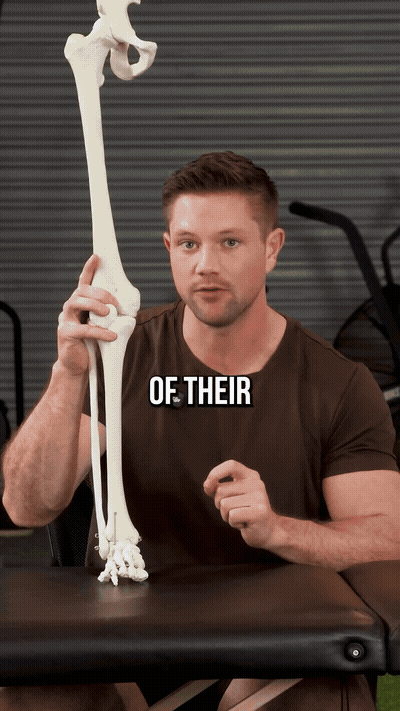

Why Not to Force the Outside Edge
Concept
Walking on the inside of your foot isn't fixed by forcing your weight to the outside — that makes it worse. The collapse is the body's way of acquiring a position it's missing. The foot needs pronation (arch down) AND supination (arch up, leg externally rotates).
- Don't force weight to the outside of the foot
- Collapse = body seeking a missing position
- Foot needs both pronation and supination shapes
- Supination rises the arch + externally rotates shin/femur
Setup — Paper Towels / Wedges
Setup
Fold paper towels to about this thickness, or use wedges (better). Slide them under the INSIDE of the heel and first two toes of the working side — the outside of the heel and outer toes stay off. Feet hip-width apart, working foot one toe length forward.
- Fold paper towels ~this thick (or use wedges)
- Slide under the inside of the heel + first two toes
- Outside of the heel and outer toes stay off
- Feet hip-width apart, working foot one toe length forward
The Turn — Weight Shift + Knee Drive
Drill
Shift all weight over the working foot (pole through the nose down into the foot), neutral pelvis, knees ~10% unlocked. Gently push the passive knee forward to turn into the working side. At the gentle end range lock the knee (no hyperextension) and do another rotation. Feel a stretch in the back/side of the hip.
- Shift weight over the working foot — pole from nose to floor
- Neutral pelvis, knees ~10% unlocked
- Push the passive knee forward to turn into the side
- Never force — stay in your range of motion
- At end range, lock the knee without hyperextending, then turn again